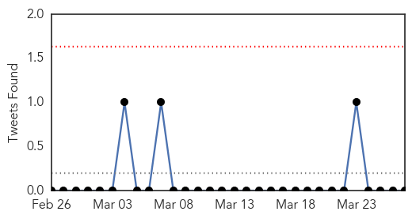
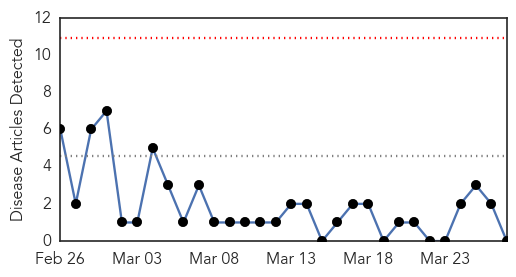
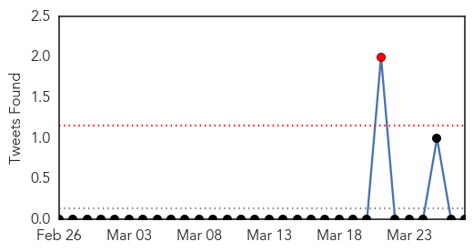

Influenza
30-Day Web Trend
0 alerts, 0 warnings
30-Day Twitter Trend
0 alerts, 0 warnings

Article Locations
Article Confidences

Top Articles:
Top Tweets:
- 0.673
- Novel mutation identified in Cambodian H5N1 influenza virus; Hospital acquired infection rates. HealthSecurity http://t.co/JWXBy2z7Nh
Swine Flu
30-Day Web Trend
0 alerts, 0 warnings

30-Day Twitter Trend
2 alerts, 0 warnings

Article Locations

Article Confidences

Top Articles:
-
No articles found for Mar 27, 2014
Top Tweets:
-
No tweets found for Mar 27, 2014